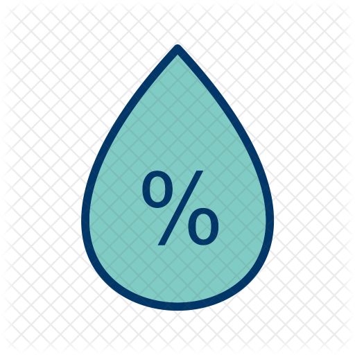

<div class="marker" (click)="isClickedToggle()" [ngClass]="{bigmarker: isClicked}">
    <div class="markerInfo ">
        
        <h1> {{displayInfo?.main.temp | number:'1.0-0' }} &#0176;C</h1>
    </div>
    <div class="markerInfo" *ngIf="isClicked">
        
        <h1> {{displayInfo?.main.humidity}}%</h1>
    </div>
    <div class="markerInfo" *ngIf="isClicked">
        
        <h1> {{displayInfo?.wind.speed | number:'1.0-0'}} km/h</h1>
    </div>
</div>
